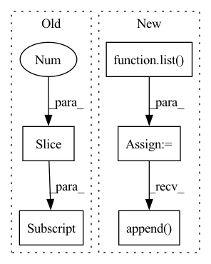

Pattern ID :460
Before Change
self.latent_width = example_features[-1].shape[-1]
relative_variational_blocks = list()
for example_feature in reversed(example_features[:-1] ):
for group_index in range(2):
print("previous.shape:", previous.shape)
print("example_feature.shape:", example_feature.shape)After Change
level_sizes, reversed(example_features)
)):
print("level_index:", level_index)
inner_blocks = list()
for block_index in range(
1 if level_index == 0 else 0, level_size
):
print("block_index:", block_index)
print("previous.shape:", previous.shape)
print("example_feature.shape:", example_feature.shape)
relative_variational_block = RelativeVariationalBlock(
previous.shape,
example_feature.shape,
latent_channels,
upsample=(block_index == (level_size - 1)),
)
previous, _ = relative_variational_block(
previous, example_feature
)
inner_blocks.append( relative_variational_block)
relative_variational_blocks.append(nn.ModuleList(inner_blocks))
self.relative_variational_blocks = nn.ModuleList(
relative_variational_blocksIn pattern: SUPERPATTERN
Frequency: 3
Non-data size: 5
Instances Fragment ID: 2480137
Project Name: aiwizo/template-nvae
Commit Name: e5080ae27b935dfabc3edcc93b1529e2211a5c63
Time: 2020-08-31
Author: samedii@gmail.com
File Name: vae/architecture/decoder.py
M Class Name: DecoderNVAE
N Class Name: DecoderNVAE
M Method Name: __init__(4)
N Method Name: __init__(3)
M Parent Class: nn.Module
N Parent Class: nn.Module
M File Name: vae/architecture/decoder.py
N File Name: vae/architecture/decoder.py
M Start Line: 122
M End Line: 132
N Start Line: 115
N End Line: 148
Before Change
def __getitem__(self, index):
if self.split_modalities:
sig = self.signals[index]["ft"][self.signal_start: self.signal_start + self.signal_length, :3] , \
self.signals[index]["ft"][self.signal_start: self.signal_start + self.signal_length, 3:]
else:
sig = [self.signals[index]["ft"][self.signal_start: self.signal_start + self.signal_length]]After Change
def __getitem__(self, index):
if self.split_modalities:
sig = list()
for mod_idx, mod_dim in zip(self.pick_modalities, self.dim_modalities):
sig.append( self.signals[index]["ft"][self.signal_start: self.signal_start + self.signal_length,
mod_idx:mod_idx + mod_dim])
else:
sig = [self.signals[index]["ft"][self.signal_start: self.signal_start + self.signal_length]]
label = self.signals[index]["label"] Fragment ID: 2480139
Project Name: kolaszko/haptic_transformer
Commit Name: bc48653ae5390eb83da8ae8fac343959f6ac16a7
Time: 2021-12-02
Author: michalbednarek.e@gmail.com
File Name: data/qcat_dataset.py
M Class Name: QCATDataset
N Class Name: QCATDataset
M Method Name: __getitem__(2)
N Method Name: __getitem__(2)
M Parent Class: Dataset
N Parent Class: Dataset
M File Name: data/qcat_dataset.py
N File Name: data/qcat_dataset.py
M Start Line: 76
M End Line: 77
N Start Line: 81
N End Line: 85
Before Change
def __getitem__(self, index):
if self.split_modalities:
sig = self.signals[index]["signal"][self.signal_start: self.signal_start + self.signal_length, :3] , \
self.signals[index]["signal"][self.signal_start: self.signal_start + self.signal_length, 3:]
else:
sig = [self.signals[index]["signal"][self.signal_start: self.signal_start + self.signal_length]]After Change
def __getitem__(self, index):
if self.split_modalities:
sig = list()
for mod_idx, mod_dim in zip(self.pick_modalities, self.dim_modalities):
sig.append( self.signals[index]["signal"][self.signal_start: self.signal_start + self.signal_length,
mod_idx:mod_idx + mod_dim])
else:
sig = [self.signals[index]["signal"][self.signal_start: self.signal_start + self.signal_length]]
Fragment ID: 2480138
Project Name: kolaszko/haptic_transformer
Commit Name: bc48653ae5390eb83da8ae8fac343959f6ac16a7
Time: 2021-12-02
Author: michalbednarek.e@gmail.com
File Name: data/haptic_dataset.py
M Class Name: HapticDataset
N Class Name: HapticDataset
M Method Name: __getitem__(2)
N Method Name: __getitem__(2)
M Parent Class: Dataset
N Parent Class: Dataset
M File Name: data/haptic_dataset.py
N File Name: data/haptic_dataset.py
M Start Line: 33
M End Line: 34
N Start Line: 39
N End Line: 44